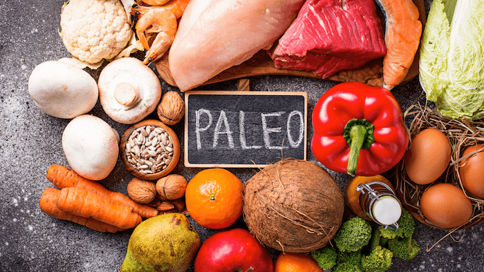

АБЦ дијета, популарно позната као "семафор", прилично је блага метода мршављења погодна за готово све. Уз његову помоћ, можете се учинковито решити вишка килограма без штете свом здрављу.
Ова дијета дели се у три групе од којих свака има одређену боју. Група А је црвене боје. Храна и пића који су укључени у њу уклањају се из прехране. Производи следеће групе (жуте или Б) могу се конзумирати само до 13 сати.
И трећа, зелена група Ц, састоји се од производа који се користе без икаквих ограничења, у било којој количини и у било којем тренутку. То су плодови мора, кухана риба, јабуке, зелена салата, мрква, купус, наранџе, лимун, јаја, биљно уље, биље. Боље је јести мање, али често око 5-6 пута дневно.
| Намирнице | Зелена зона | Жута зона | Црвена зона |
|---|---|---|---|
| Пиринач | куван | рижото | пржен |
| Хлеб | хлеб од целог зрна | бели хлеб | колачи, кроасани и пецива |
| Тестенина | кувана | гратинарано | пржена |
| Кромпир | печен | пире | пржен |
| Поврће | барено | са мало уља | пржено у доста масти |
Мане:
Без података о величини порције. Без калоријских података и нивоа глихемијског састава. Није прецизирано којој зони намирница у старту припада.
У књизи “The Paleo Diet” изнете су тврдње да је људска генетика најбоље прилагођена исхрани наших предака пре пољопривредне револуције.
Као таква, Палео дијета базира се на исхрани која је била доступна људима у то време. Многе намирнице су забрањене.
Укратко, то значи избегавање сухомеснатих јела, затим шећера, соли, производа од житарица (хлеб, кукуруз, пшеница, пиринач, тестенине…), махунарки, млечних производа, квасца, кафе и алкохола.
Кромпир, соја и кукуруз су посебно забрањени због тога што су данас генетски и нутриционистички модификовани.
Предности:
Повећан унос протеина смањује апетит и убрзава метаболизам;
Високо протеинска исхрана одржава мишићну масу;
Наглашава се важност воћа и поврћа;
Организам има довољно есенцијалних масних киселина;
Исхрана ће одговарати особама које су склоне повишеном шећеру у крви;
Побољшаће здравствено стање и смањити ризик од многих болести као што су дијабетес, срчане болести и рак;
Ствара алкално оптерећење на бубрезима, што спречава губитак калцијума и чува коштано ткиво, а то пак може да смањи ризик оболевања од остеопорозе;
Нема бројања калорија и мерења оброка.
Мане:
Прекомерним уносом протеина организам се оптерећује бројним штетним материјама, посебно амонијаком који може имати и токсичне последице; Дијета би могла тешко да падне особама које воле угљене хидрате или скробне намирнице; Дијета захтева пуно преданости; У друштвеним ситуацијама (на забавама и славама) можете имати потешкоћа да се придржавате ове дијете; Потребан је период одвикавања од кафе, шећера и осталих слаткиша; Потребно је узимати калцијум због неузимања млечних производа.
